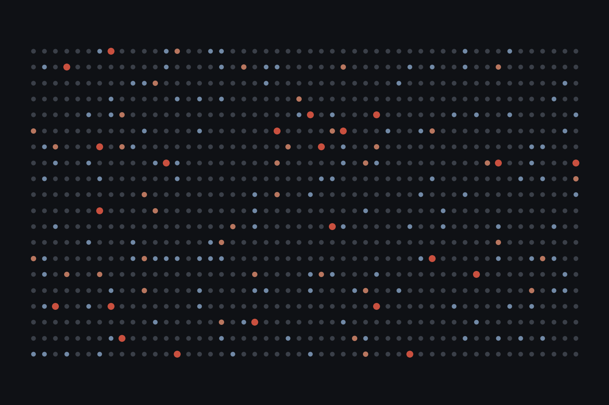
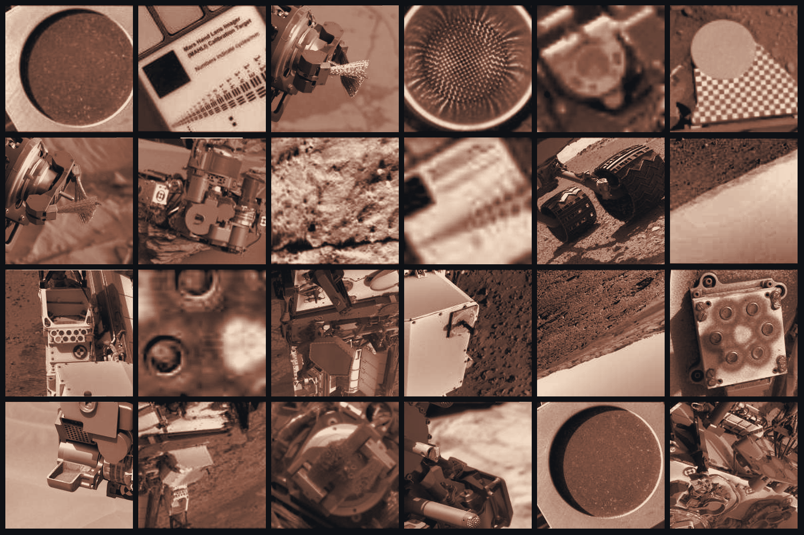
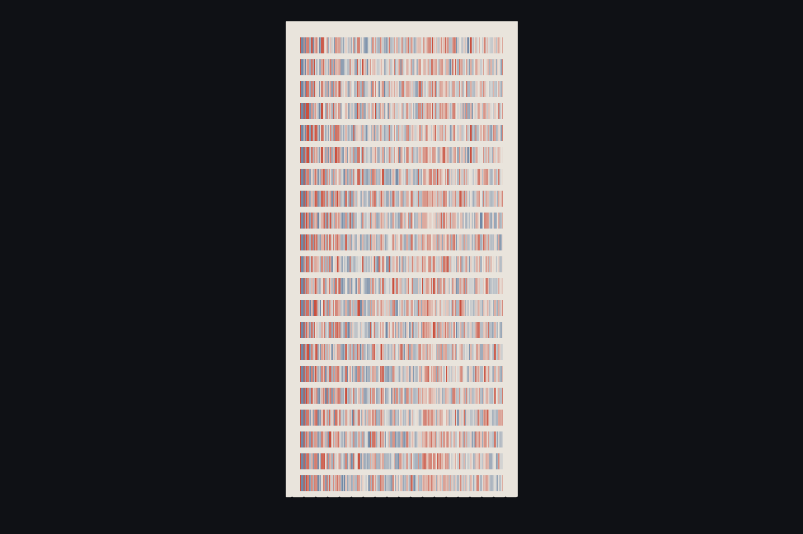
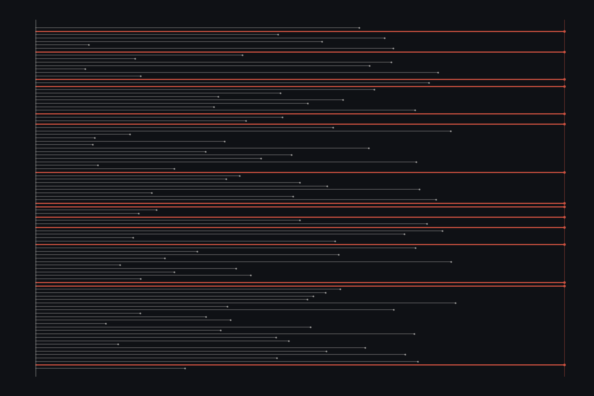
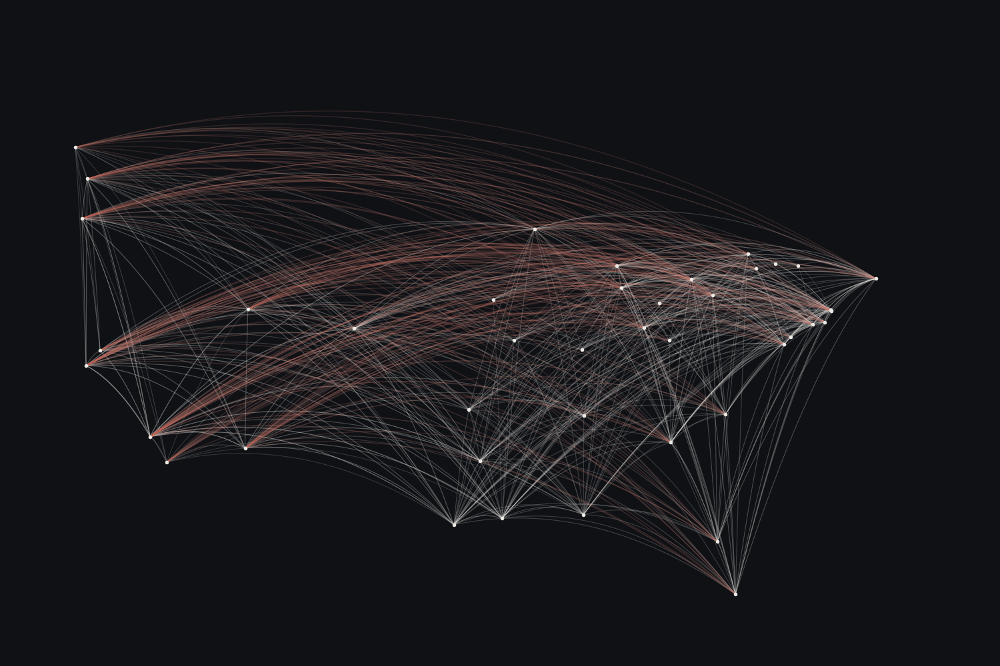
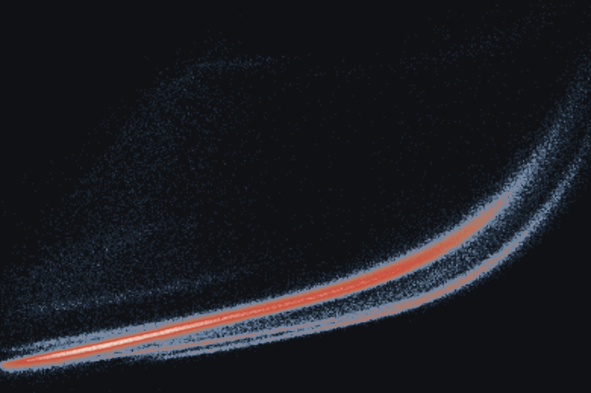
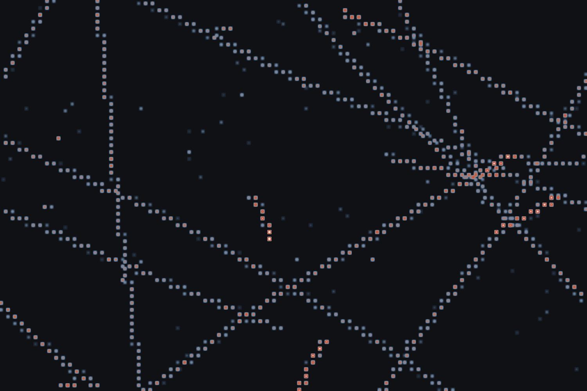
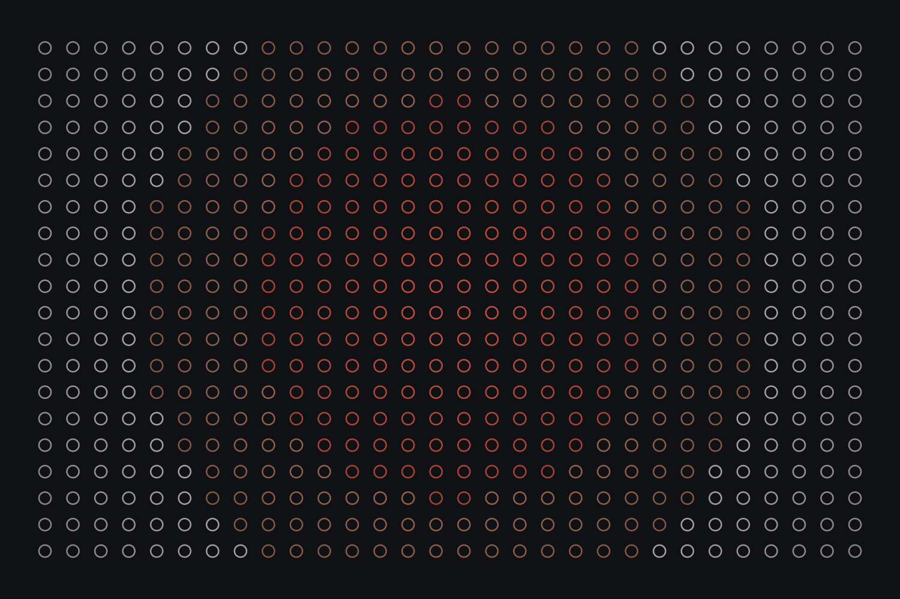
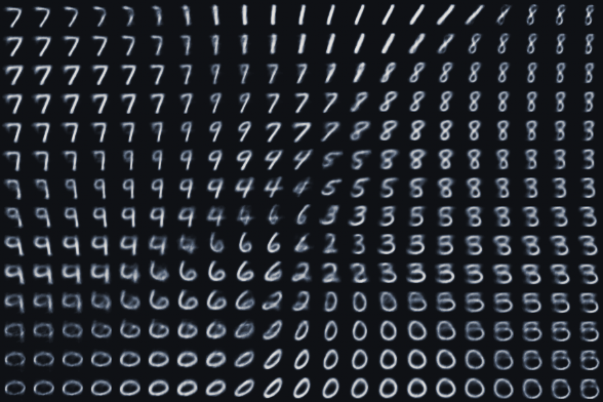

I lead data teams for mission‑driven organisations.
Building data and product at Hockeystick, a political data start-up. Previously with the Democratic National Committee for the 2024 presidential election.
Work and Writing
Newest first
Predicting Flight Delay Severity at Scale
A four-tier delay classifier over 31M US flights in PySpark. The chosen random forest caught 64% of delays over two hours on a blind 2019 test, the only model to clear the safety floor, at a deliberate cost to overall accuracy.

Classifying Curiosity Rover Images
A three-stage ResNet50 pipeline over 25 classes of Curiosity rover images, reaching 76.5% accuracy and 0.666 macro-F1. The held-out errors show the hard part is classes that look alike, not classes that are rare.

Multi-Task Sentence Transformer for Receipt Processing
One BGE-M3 backbone with two task heads, classifying receipt lines and tagging the entities inside them. On the public CORD-v2 corpus it reaches 97.8% line accuracy and 0.898 entity macro-F1.

MLOps: The Bridge Between Research and Production
Most machine learning projects never deliver value in production. An essay on why MLOps is more than DevOps for models, and why operational discipline now decides which organisations benefit from AI.

Does Travel Cost NBA Teams the Game?
A regression over 46,903 NBA games from 1947 to 2025. How far a team flies has no detectable effect on the score, but flying west to east is worth about a point.

Muon Track Momentum Resolution Regression
Predicting muon track momentum resolution from five kinematic inputs. A properly trained network reaches R² of 0.854 on 41,797 unseen tracks, against 0.698 for linear regression.

High Energy Particle CNN Classifier
A convolutional network that identifies particles from liquid argon detector images. Tuning the learning-rate schedule, not the architecture, lifted validation accuracy from 83.4% to 89.1%.

How Many Samples Prove Mars Is Lifeless?
Second author, Nature Astronomy. A statistical case that showing a Martian environment is lifeless, with confidence, takes hundreds of samples, which shapes how sample return missions should be planned.

MNIST Variational Autoencoder
Compressing handwritten digits into a two-dimensional latent space and generating new ones by sampling across it. Ten digit clusters form without the model ever seeing a label.
About

Hi! I'm Olivia Jackson Lambert, a data leader based in San Francisco. I enjoy building teams and systems that support decision making and strategy.
For the last few years that has meant political and civic data, first at the Democratic National Committee and now as the Data Team Lead at Hockeystick.
When I'm not working, I'm usually kayaking, reading, making art, or hanging out with my husband and three cats.
Values
Model Proactivity
Empower people to search for solutions so that they can ask better questions. Provide resources and signposts over an answer every time.
Champion Ownership
Allowing people to make decisions before they're 100% ready is the fastest path to better quality work and problem solving skills.
Iterate on Imperfection
In the age of AI, ideas and experiments can be prototyped faster than ever. Test multiple bets and converge on what works.
Challenge Assumptions
Question the default, no matter your seniority. Disagreement is welcome and vital for a healthy team.
Understand the Impact
Learn how people use data before building for them. Create constant feedback loops to empower users to be creative and contribute to product direction.
Experience
-
2026 to Present
Data Team LeadHockeystick
Building the data team from the ground up and driving product strategy, technical excellence and culture.
-
2024
Senior Analytics EngineerDemocratic National Committee
Delivered production models to campaign teams through the 2024 election cycle.
-
2023 to 2024
Data ScientistKenvue, Johnson & Johnson
Built the consumer goods forecasting models teams relied on across five continents.
-
2023
Data ScientistFidera Group
Introduced data engineering standards at a small European hedge fund.